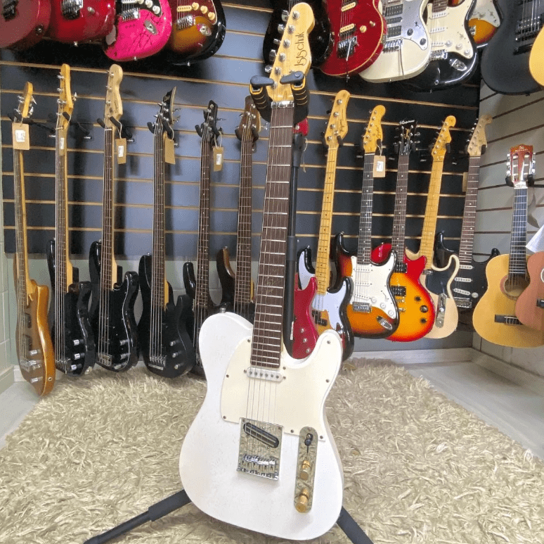
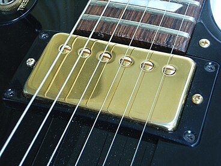

A Historia da Guitarra
A guitarra elétrica (AO 1945: eléctrica) (também chamada apenas de guitarra) é um instrumento musical pertencente à família das cordas, cujo som é sempre amplificado eletronicamente. É um Instrumento de cordas (ou cordofone), ou seja, o som é produzido manualmente pela vibração das cordas como na guitarra acústica, porém é transformado em sinal elétrico devido a ação de captadores magnéticos (na maioria dos modelos).
Os sinais elétricos podem ser simplesmente amplificados e emitidos por um amplificador que converte os sinais elétricos em ondas sonoras, ou pode ser modificado antes de ser novamente convertido em som pelo amplificador
Por sua potência sonora e pela possibilidade de alteração eletrônica de diversas características de seu timbre, as guitarras elétricas são utilizadas principalmente no rock, música pop, blues e jazz, podendo ser encontradas ainda em outros gêneros musicais.
Modelos de guitarras
Pode-se dividir as guitarras elétricas em dois tipos básicos: Guitarras Maciças e Guitarras Semi-acústicas.
Guitarras maciças
Tem corpos maciços e, em sua maioria, feitos em madeira. Materiais alternativos como acrílico, alumínio e fibra de carbono também são usados. Não possuem caixa de propagação acústica, seu som natural é pouco intenso e consegue ter mais sustentabilidade na nota. Podem ter o braço embutido ao corpo (quando inteiramente feito de uma única peça de madeira), colado ou ainda parafusado. Pelo fato de não apresentarem caixa acústica, a madeira com que são construídas é a principal responsável pelo timbre que elas entoarão. As guitarras maciças são preferidas por músicos que necessitem adicionar efeitos sonoros (principalmente distorção) e tem seu uso mais realizado para produção de músicas dos estilos e derivados do rock como o heavy metal. Os modelos mais conhecidos entre as guitarras maciças são as Fender Telecaster e Stratocaster, as Gibson Les Paul e SG, bem como as guitarras Ibanez, Jackson, ESP, Washburn, muito utilizadas no heavy metal.

Exemplo de guitarra corpo solido modelo telecaster
Captadores magnéticos
A maioria das guitarras atuais utiliza captadores desta natureza. O captador de guitarra tem função de transformar as ondas mecânicas produzidas (o som), principalmente produzidas por cordas, em ondas eléctricas. Existe uma grande quantidade de tipos e qualidades de captadores no mercado, eles são habitualmente classificados levando em conta suas características técnicas: Quanto à alimentação, dividem-se em captadores ativos e captadores passivos; quanto ao número de bobinas, dividem-se em captadores simples (single-coils), captadores duplos (humbuckings) ou quádruplos (quad-rail); podem ser divididos ainda, quanto ao material magnético, em captadores cerâmicos e captadores de alnico.

Captador desenvolvido pela empresa Gibson, modelo com duas bobinas
Captadores passivos
Não necessitam de alimentação elétrica (fonte de energia elétrica) para funcionarem. Apresentam grande integração com os demais materiais da guitarra. Enorme variedade de timbres e qualidades. Em maioria são de alta impedância e captam interferências diversas com facilidade.
Captadores ativos
Os captadores são na verdade uma bobina, ou seja, consistem de magnetos enrolados por um fio (coil) criando assim o campo magnético que é perturbado pelas cordas de metal ao vibrarem em frequências diferentes, tal perturbação no campo magnético gera o impulso elétrico que mais tarde é convertido em som (onda mecânica).
Captadores cerâmicos
São feitos com material mais barato e são mais comuns no mercado.
Captadores de Alnico
São feitos com matérias mais caros e selecionados, sua qualidade normalmente é superior aos cerâmicos. Os ímãs dos núcleos são feitos de uma liga de alumínio, níquel e cobalto (Al-Ni-Co). Existem vários tipos de alnico dependendo da porcentagem dos componentes em sua mistura. O mais comum em captadores são os AlNiCo II e o V. Magnetos compostos de alnico tendem a soar mais vintage. São também comumente mais caros devido à matéria-prima.
Captadores simples (single-coils)
São estruturados apenas com uma bobina. São mais sensíveis às interferências que causam ruídos. Em geral, o timbre resultante tende a ser mais limpo, brilhante, estalado e estridente em comparação com os humbuckers. Um exemplo do uso de captadores single é o timbre das guitarras Fender.
Captadores duplos (humbuckings ou humbuckers)
São estruturados com duas bobinas em um só corpo. Normalmente as duas bobinas funcionam em polaridades inversas. Assim cada uma elimina parte do nível de ruído da outra. Essa interação também altera a resposta tonal do captador, o que lhe confere um som diferente daquele produzido por um captador single-coil. Em geral, o timbre resultante tende a ser mais cheio, vigoroso, macio e adocicado em comparação com os single-coils. Um exemplo do uso de captadores duplos é o timbre imortalizado pelas guitarras Gibson Les Paul.
Alguns captadores duplos apresentam a mesma aparência externa tradicional dos captadores simples, pois possuem as duas bobinas empilhadas, a exemplo dos modelos HS-2 e HS-3 da DiMarzio e a série Noiseless da Fender.
Captadores quad-rail
São estruturados com quatro bobinas em um só corpo.
Modificações elétricas
As modificações podem ser inúmeras, dentre as mais comuns são a adição de: distorção, repetição (delay), reverberação, equalização, flange, phaser, wah-wah e chorus. As modificações dos sinais elétricos podem ser feitas por aparelhos eletrônicos próprios como: pedais compactos, pedaleira de guitarra (tais como modelos fabricados pela Boss, Digitech e Zoom), rack de efeitos, efeitos produzidos por computador (Cakewalk Sonar 1, 2, 3, 4, 5; SoundForge, Protools) ou amplificadores de guitarra com efeitos embutidos.
Altura
A altura do som produzido depende da relação física entre o comprimento da corda, de sua tensão e sua espessura.
Basicamente, quanto mais curto o comprimento da corda, quanto mais fina a corda ou quanto mais distendida a corda, maior velocidade terão as vibrações, logo, mais aguda será a nota (ou mais alta).
A altura padrão das cordas soltas de uma guitarra (ou a afinação padrão) é igual a do violão (das cordas agudas para graves): Mi, Si, Sol, Ré, Lá e Mi. Porém, existem infinitas combinações de afinação das cordas soltas. Existem ainda guitarras com mais de 6 cordas. Sua afinação pode obedecer a razão de intervalos das anteriores ou não.
O guitarrista pode modificar a altura da nota executada de diversas maneiras. A mais comum é pressionar a corda num determinado traste para diminuir ou aumentar o comprimento da corda que vai vibrar tornando a nota mais alta ou mais baixa. Cada traste divide o comprimento da corda numa razão geométrica que altera a altura da nota sempre em semitons (de acordo com o temperamento atual). Outra maneira comum é esticar ou até distender a corda com o uso de técnicas como 'bend' e alavancada, essa técnica tira o temperamento original do instrumento.
Desing
O design de uma guitarra elétrica inclui duas partes principais: o braço e o corpo, bem como as cordas.
O pescoço é usado para controlar o tom das notas. É feito de madeira e é composto por duas partes:[4] o braço propriamente dito e a suspensão sobre a qual são colocados os trastes, que servem para indicar as posições das notas no braço. O braço possui uma cabeça na qual estão localizadas as cravelhas (tailpiece), que, por sua vez, são utilizadas para enrolar as cordas e afinar o violão. Uma âncora de metal é instalada dentro do pescoço, que desempenha o papel de uma haste para compensar a deflexão do pescoço sujeito à tensão da corda. Existem vários formatos de pescoço diferentes: Pescoço redondo: formato clássico (Gibson, Fender), formato fino e largo: braço parece plano (Ibanez, Jackson, Yamaha), raio variável: cônico em direção à base do braço
- Cordas: São uma fonte direta de vibrações sonoras que são produzidas sob a influência do dedilhamento do guitarrista. Podem variar em espessura (de 0,08mm ou menos a 0,58mm ou mais) e material (cromo, níquel, aço, etc.).[6] Eles consistem em um núcleo, ou um núcleo (veia), além de uma trança e uma espiada.
- Corpo (сresonance box) - serve para fixar as cordas, assim como os elementos elétricos e acessórios.[7] Assim como o mastro, na maioria dos casos, é feito de madeira (em uma peça ou em várias). Uma ponte (suporte de cordas) é colocada no corpo, à qual as cordas são fixadas (pode ser de vários tipos: Floyd Rose, Tune-o-Matic, Tremolo Bar); captadores que convertem as vibrações das cordas em um sinal elétrico; bloco de tom com potenciômetros para controle de volume e tom, além de um interruptor de captação; e um conector Jack para conexão de cabos. Além disso, no deck, há acessórios para uma alça de ombro para jogar em pé e um escudo para proteger o corpo de arranhões ao jogar.
Intensidade
A intensidade do som produzido depende respectivamente da intensidade de vibração das cordas, da proximidade das cordas do captador magnético, da qualidade e tipo de captador magnético, da quantidade de sinal eléctrico perdido nos cabos eléctricos, do nível de amplificação eléctrica e da qualidade e tipo do alto-falante, dentre outros fatores.
Temperamento musical
A maioria das guitarras elétricas convencionais possuem o braço dividido em trastes que determinam a relação de altura entre as notas. Ou seja, são instrumentos musicais temperados.